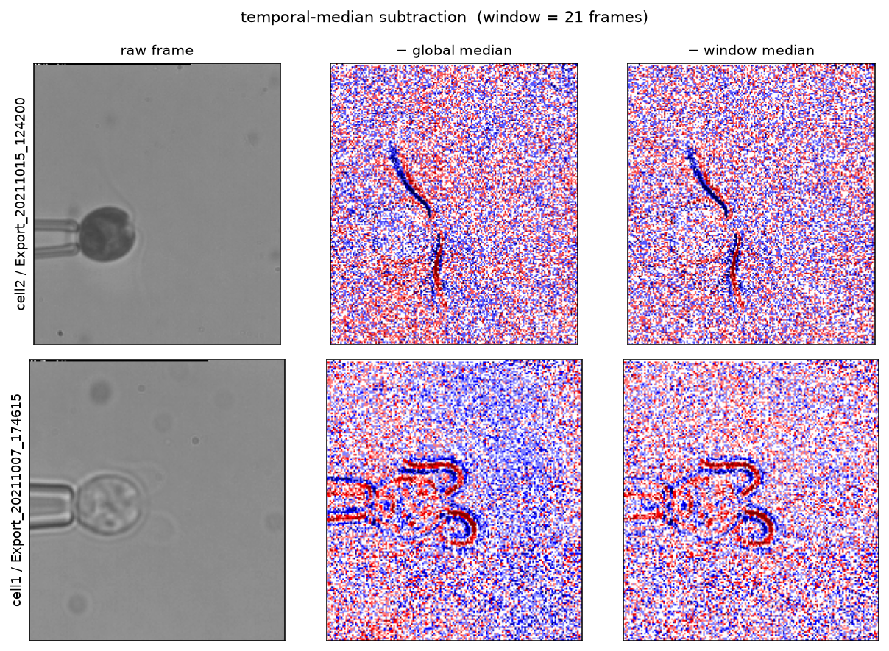
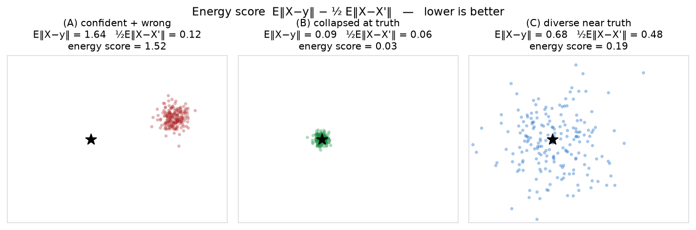
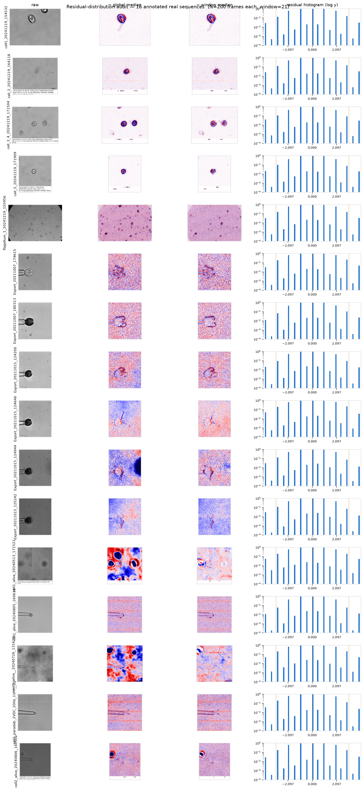
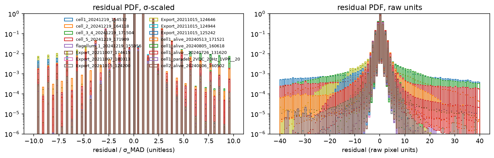
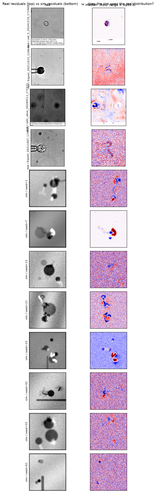
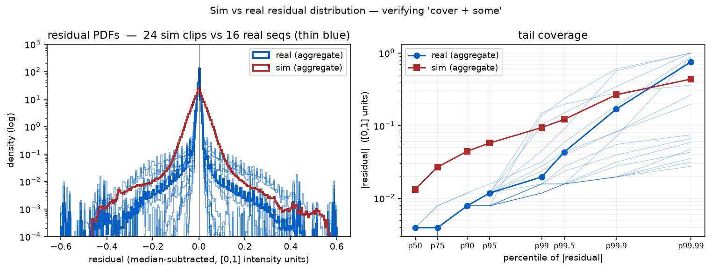
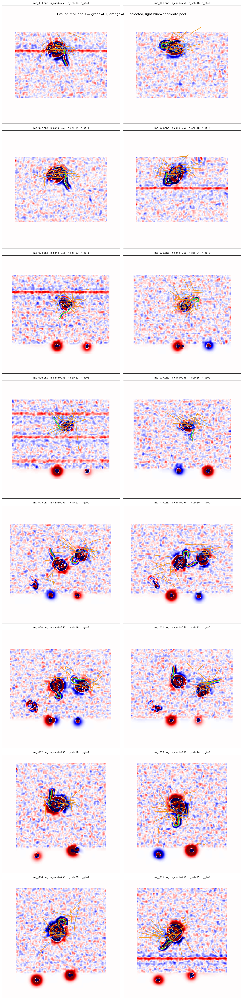

Plan doc — 2026-08-31. Draft after pivoting from DETR-slot to a stochastic dense predictor with an ILP post-solve. Written to align on the approach before committing code; the design questions in blue boxes are the ones we should resolve before implementation.
The DETR-slot pipeline hits a ceiling on real videos (see
MEMORY.md — sim→real gap is representational, no
finetune has beaten algae_unet_4slot_v4 yet). Two independent
insights motivate the pivot:
discrete_linking_opt) to lock onto it. That reframes the
loss from "predict the flagellum" to "cover the flagellum with samples".Every real video is preprocessed by global temporal-median subtraction (or sliding-window when the cell/pipette drifts). The sim's job is to match the appearance of that residual.

The sim (JAX, batchable) produces a median-subtracted clip directly:
solve() is ~20 lines of JAX and gives calibrated
low-Re propulsion.A first cut of the sim lives at
sim2real/sim/flagella_diverse.py (JAX, ~500 LOC, untested; needs
one fix pass then a validation grid comparing sim residuals vs real residuals
side-by-side).
A UNet ingests the T-frame residual clip and outputs a stochastic prediction of flagellum parameters — a per-location skeleton with mixed existence. To turn the UNet into a sampler we condition on a per-pixel noise channel (simplest option; alternatives in the questions box below).
For a predictive distribution P and target y, the energy score is
ES(P, y) = EX~P ‖X − y‖ − ½ EX,X'~P ‖X − X'‖
It's a strictly proper scoring rule (Gneiting & Raftery 2007): minimized exactly when P is the true predictive distribution. The two terms have complementary jobs:
E‖X − y‖ — pulls samples toward the truth (accuracy).−½ E‖X − X'‖ — rewards spread between independent
samples (calibrated diversity). Without it, MSE-style training collapses
to the conditional mean.In practice we Monte-Carlo it with two independent forward passes per training example: draw X and X' with different noise seeds, compute the two terms on the mini-batch. Compute cost: 2× a normal forward.

E‖X−y‖, small spread — worst score. (B) collapses
at the truth — perfect if the truth were deterministic, but that's
exactly the failure mode we want to avoid on OOD real data. (C) is a
diverse cloud around the truth — pays some
E‖X−y‖ for large ½E‖X−X'‖, and generalises. When
the target is genuinely uncertain (many plausible flagella shapes given the
same faint residual), (C) beats (B) in expectation over targets — that's the
calibrated regime we're after.
The concrete shape of X — a per-pixel heatmap? a set of K spline control points? PCA-reduced shape codes like deeptangle? — determines whether the energy score decomposes per-location or is a joint distribution over the whole scene. Called out in the questions box.
discrete_linking_opt already solves this problem for
worms/cells: an ILP (CP-SAT) picks a non-overlapping subset of primitives that
(a) reconstructs the frames and (b) forms smooth tracks across time. We port
the same machinery, with flagella as the primitive:
Two ingredients we get for free from the DIR side: gap-linking (bridge frame-to-frame blinks), and warm-start chaining (gap-1 → gap-2 → gap-3) for tractability.
Given the ILP downstream, we don't care about winning on any single prediction — we care about the answer being in the pool. The core question:
How do we maximise the chance that at least one sample (out of N) lands close to a real flagellum, when the real data is OOD relative to the sim?
The energy score is our first move — it explicitly rewards spread, so it should generalise better than MSE. Levers to explore later: sampling temperature, noise-channel shape, prior mixture weight, whether to also condition on a coarse feature from a frozen self-supervised backbone, whether to add an ensemble of UNets, etc.
Per grid cell: (K spline control points as offsets, confidence). Energy score computed per cell independently. Scene-level joint calibration is DIR's job, not the NN's.
Concatenate a low-frequency noise map z to the input; different
seeds give different sample sets. At inference draw N independent samples with
different z, pool everything into DIR — multi-modality comes entirely from the
noise channel + the energy score's diversity term.
Why no AR: we considered a mask-and-repeat scheme (draw, subtract the top-scoring flagella from the residual, redraw). That gives disjoint-flagellum coverage, not multi-modality — different hypotheses about the same location would need a training-paradigm change (Attend-Infer-Repeat style). Not worth the complexity until we have evidence A.1 undercovers.
Escalation path (if A.1 undercovers real data):
Risk to watch: the UNet learning to ignore z. Mitigations:
per-clip noise (not per-frame), sufficient noise-channel scale, and monitoring
the ratio ½E‖X−X'‖ / E‖X−y‖ during training — if it collapses to
0 we know z is being ignored.
No cross-sample NMS before the ILP. Ultra-loose pooling is exactly the deeptangle worm recipe DIR was designed for.
MVP trains on median-subtracted sim residuals only. Once we have a working pipeline, revisit whether to bootstrap a second training round using DIR outputs on real data as pseudo-labels (self-training loop). Not committing to this yet — needs the MVP recall numbers first.
Pre-DIR: max over samples of Chamfer-close-enough recall, averaged over the 59 painted flagella — a pure "does the NN cover it" number. Post-DIR: precision + recall of the selected subset — end-to-end number.
--nworms 5,10,50,100,150,200,250
trick) — add if density robustness fails.Script: scripts/inspect_real_residuals.py. Outputs at
runs/real_residuals/{panel,hist,stats}. Loaded N=200 evenly-spaced
frames per sequence, subtracted a sliding window-21 median.


Calibration numbers ([0,1] intensity units, aggregate across 16 seqs):
Bugs found + fixed: config needed frozen=True for
jax.jit hashability. Added two capabilities that were missing but
visible in real:
Tuned ranges after visual comparison: cell radius 8-35 px (was 12-60), cell amp 0.05-0.28 (was 0.10-0.35), flag amp 0.02-0.70 (was 0.10-0.55), debris count 0-5 (was 0-12), debris amp 0.005-0.06 (was 0.03-0.20), vignette max 0.10 (was 0.35).


Remaining sim gaps (not blockers for the UNet prototype):
sim2real/model/unet_energy.py (fresh U-Net, 32×32 grid,
n_suggestions=4, 22 outputs per prediction). sim2real/model/energy_loss.py
implements E‖X−y‖ − β·½E‖X−X'‖ with:
sqrt(sum²+ε)) — jnp.linalg.norm has infinite
gradient at 0; matching curves used to NaN backprop.min(diversity, k·accuracy) stops the model
gaming the reward.Two 50k-step runs on CPU (BS=8/12, ~13 min each). v2 uses MSE score loss; v3 uses BCE (MSE collapsed to always-predict-0 on the imbalanced positives).
sim2real/dir/ — three modules:
x = birth + Σincoming = death + Σoutgoing), link
implications, at-most-one cliques.Simplifications vs. reference (discrete_linking_opt/2_..._celegans.py):
drop multilinear overlap interactions (rely on at-most-one), drop cell divisions
(flagella don't split). Adaptations for flagella: linking + birth/death is the
essential structure.
v2 baseline (MSE score, 50k steps, BS=8):
coverage@ 8 px pre-DIR = 0.481 post-DIR = 0.442 coverage@12 px pre-DIR = 0.692 post-DIR = 0.654 by n_gt @8px: n_gt=1 (14 clips) → 0.643 n_gt=2 (45 clips) → 0.456
Chamfer distance to nearest candidate (all 104 GT, canonical px):
p25=6.4 p50=8.1 p75=13.5 p90=34.9 p95=59.8 ≤5 px: 13 ≤8 px: 50 (48%) ≤12 px: 72 (69%) ≤20 px: 88 (85%)
The model produces candidates near the GT (69% within 12 px, real flagellum width ≈ 4 px) but often just outside the tight 8 px threshold. The dominant failure mode is n_gt=2 scenes (Chlamydomonas pairs) where the model's two suggestions per grid cell struggle to disentangle the pair.

Given 48% recall on real, we could bootstrap by taking DIR-selected tracks on the real videos as pseudo-labels and training a second round. Worth trying only if the first-round numbers plateau clearly below what we'd want.